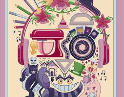
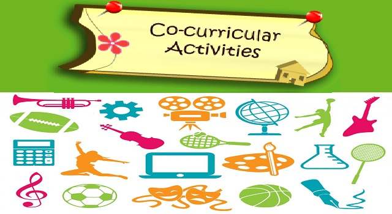

Technical Skills

- C programming
- CPP programming
- JAVA programming
- Web Developement
Language Know
- Marathi(Native)
- English(Professional)
- Hindi
- Gujrati(Basic)
Hobbies / Interest
- plaing football
- Dancing
- Basketball
- Cooking
Developed the java project for store for billing and storing all the information about products using html and MySQL as database.
Silver medal in athletics which was of 3km long
Runnerup in C lang competition
If you have any query then contact us:
Written by Shraddha suradkar.
CO-CURRICULAR ACTIVITIES
1.Worked as Volunteer in Technical Event SHIELD 1.0 in GPJ
2.Worked as a Committee leader in SHIELD 2.0 in GPJ
3.National player in football matches was held in Mumbai in 2012
4.CAT3 return in RDC